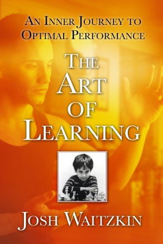

Library › Self-Improvement
The Art of Learning — Summary & Key Lessons

An inner journey to optimal performance — from chess prodigy to tai chi world champion, the meta-skill of mastering anything.
📖 OPEN THE FULL INTERACTIVE BREAKDOWN →🌐 Read it in Hindi, Hinglish, Gujarati, Tamil & 22 more languages — free, with audio.
💡 The Big Idea
Josh Waitzkin was a chess International Master by his teens (the film 'Searching for Bobby Fischer' is about him) — then walked away and became a world champion in Tai Chi Push Hands. Two wildly different arts, one transferable engine: THE ART OF LEARNING ITSELF. Its parts: adopt the INCREMENTAL theory of ability (skill is built, not possessed — the entity theory 'I'm talented' shatters at the first real resistance); INVEST IN LOSS (put yourself where you'll be beaten by superiors and mine every defeat — protecting your ego and growing are mutually exclusive activities); MAKE SMALLER CIRCLES (master a micro-skill so deeply it becomes principle — depth beats breadth because internalized fundamentals compress into intuition, freeing consciousness for the next layer); use ADVERSITY as an amplifier (his broken hand became the tournament where he learned one-armed softness); build a personal TRIGGER ROUTINE that summons peak state on demand; and learn to SLOW DOWN TIME — chunked knowledge lets masters perceive more frames per second in the same objective moment. The through-line: the learner's real opponent is never the rival; it's their own resistance to discomfort.
🧠 The 6 Key Lessons
Lesson 1: Incremental vs Entity: The Theory That Decides Your Ceiling
Chapters 1-3: The Foundation
Psychologist Carol Dweck's research anchors Waitzkin's first principle: children praised as 'smart' (entity theory — ability is a fixed thing you HAVE) choose easier puzzles, crumble at setbacks, and lie about scores; children praised for EFFORT (incremental theory — ability grows) choose harder puzzles and treat failure as information. The theories become self-fulfilling prophecies at every level of mastery: the entity-theorist prodigy hits their first real wall (there's always a wall) and faces an identity crisis — 'maybe I'm not gifted' — while the incrementalist hits the same wall and reads it as the day's syllabus. Waitzkin credits his survival of early fame to his mother and first teacher framing chess as a craft of layers, not a proof of specialness. The practical alarm: notice your language after any failure — 'I'm bad at this' is entity poison; 'I haven't built that yet' is the incremental frame that keeps the ladder climbable. And beware environments (schools, offices, comment sections) that reward looking talented over getting better — they install entity theory as culture.
📖 Example: Waitzkin's cautionary gallery: the brilliant young chess players he grew up with who were celebrated as geniuses — several quit permanently after their first major defeats, not from lack of ability but because losing contradicted their identity ('if I lose,… Read the full example →
⚡ Do this: For one week, catch and rewrite every entity sentence about yourself (spoken or thought): 'I'm terrible at X' → 'My X is at level 2 of 10, and here's the next drill.' Then pick one skill you avoided because you 'lack talent' and book 5 hours of beginner practice — as an experiment in theory-switching.
Lesson 2: Invest in Loss: Growth Lives Where Your Ego Doesn't
Chapters 8-10: Investment in Loss
In his first years of Push Hands, Waitzkin let training partners twice his size throw him around the room — refusing to use cheap tricks that won exchanges but taught nothing — because his teacher's principle was INVEST IN LOSS: deliberately enter situations where you'll be beaten, stay soft and observant inside the beating, and extract the lesson your winning self would never encounter. The alternative — practicing only what preserves your win-rate — feels productive and is actually rehearsal of your current level, forever. The blocker is ego-accounting: every session spent 'looking good' is tuition paid for zero credits. Related tool: BEGINNER'S MIND at every new level — each promotion, new market, or higher league demands a temporary willingness to be the worst person in the room; the professionals who plateau are almost always the ones who couldn't stomach being novices twice. Waitzkin's formula for training partners: seek people who beat you, thank them, and study the exact texture of how — your superiors are unpaid consultants if your ego lets them consult.
📖 Example: The larger training partner who repeatedly slammed Waitzkin into walls — most students avoided him; Waitzkin booked extra sessions, absorbing months of losses while learning to neutralize force with softness. When the national championships came, opponents… Read the full example →
⚡ Do this: Schedule a weekly 'loss investment': play/train/spar/pitch against someone clearly better, with the explicit goal of gathering three observations instead of winning. Log the observations. Protect this session from your ego's calendar-shuffling.
Lesson 3: Make Smaller Circles: Depth Compresses into Intuition
Chapter 11: Making Smaller Circles
Waitzkin's core drill philosophy, from a Zen parable of a painter drawing ever-smaller perfect circles: take ONE simple move — in his case, a basic straight punch — and refine it for months: the hip rotation, the weight transfer, the breath, the timing, condensing its essential feeling into smaller and subtler expressions until the full power lives in a movement of a few centimeters. This is the opposite of collector's mind (learning 50 techniques shallowly, owning none under pressure). The mechanism is CHUNKING: deeply internalized fundamentals get processed unconsciously, freeing working memory for higher-order perception — which is literally why masters seem to have more time: their basics run on autopilot while novices spend consciousness on footwork. The career translation: whatever your field's 'straight punch' is (the sales question, the code review, the paragraph), a season of obsessive depth on it upgrades everything built on top — numbers, one principle mastered to the bone outperforms ten techniques rented from a course.
📖 Example: In chess, Waitzkin's training inverted the norm: while rivals memorized opening theory (breadth), his teacher started him on king-and-pawn vs king endgames — nearly empty boards where he internalized the DEEP principles (opposition, zugzwang, tempo) that… Read the full example →
⚡ Do this: Name your field's straight punch — the single most repeated fundamental. Commit 30 days of daily deliberate refinement on ONLY that (film yourself, decompose it, drill the micro-components). Resist adding anything new for the month; watch what happens to everything downstream.
Lesson 4: The Soft Zone and the Trigger: Peak State on Demand
Chapters 15-17: The Power of Presence
Performance psychology's dirty secret: the state you perform in matters more than what you know, and masters ENGINEER their states. First, the SOFT ZONE: rather than the brittle 'hard zone' (demanding silence, perfect conditions — shattered by any disturbance), cultivate a flexible presence that flows WITH distraction: Waitzkin trained with blaring music and deliberate discomfort until chaos became weather, not warfare (inspired by his 42nd-street chess education among sirens and hustlers). Second, the TRIGGER ROUTINE: identify an activity where you're naturally, fully present (for his case-study executive: playing catch with his son), build a consistent 4-5 step pre-routine before it (light stretch, specific music, a short meditation, a snack), repeat until the ROUTINE ITSELF summons the state — then systematically compress it (shorter versions, then a single breath and cue-thought) and port it to high-stakes moments: you now carry an on-switch. Third, USE ADVERSITY: his broken right hand weeks before the nationals became the constraint that forced his left side and softness to championship level — the injury created the champion; the setback is raw material, not verdict.
📖 Example: The broken-hand nationals: doctors said withdraw; Waitzkin competed with the cast, discovering that one working arm forced him to perfect exactly the redirection skills two healthy arms had let him postpone — he took the title, and kept the one-armed drills… Read the full example →
⚡ Do this: Build your trigger this month: (1) identify your natural full-presence activity, (2) design a 4-step, 15-minute pre-routine and run it before that activity for 3 weeks, (3) then run the same routine before one high-stakes work moment weekly, (4) compress gradually toward a breath + cue word.
Lesson 5: The Number One Rule: Learning Is a Lifelong Love Affair
Part 1: The Foundation
Waitzkin's opening principle sounds soft but structures everything after: he treats learning itself as the love of his life — the process of growth is the reward, not the trophies. This reframing changes everything: losses become data, plateaus become phases, and the fear of failure dissolves because failure is just information about how to grow. The child prodigy who burns out usually loved winning; the lifelong learner who endures loved learning. Waitzkin's practical translation: cultivate the joy of the struggle itself — the difficult practice, the confusing problem, the slow improvement — because that joy is the only fuel that lasts a lifetime. If you don't love learning, no technique in this book will save you.
📖 Example: Waitzkin describes how, as a chess prodigy, the tournaments and titles were exciting — but what kept him studying into adulthood was the pure love of the game's depth, the same love that later carried him through the brutal early years of becoming a tai chi… Read the full example →
⚡ Do this: Reconnect with one subject you genuinely love learning about. Schedule 30 minutes of pure, no-goal study this week — no outcome, just the love.
Lesson 6: The Moveable Feast: Adversity Is the Training Ground
Part 2: The Performance
Waitzkin's response to the inevitable setbacks of high performance: adversity is not an interruption of training — it IS training. His 'moveable feast' concept: when the tournament, the game or the business deal goes badly, the feast of learning is still served — you just have to be willing to eat. The resilient performer processes defeat by extracting lessons immediately (what did my preparation miss? what did my opponent exploit? what did my emotion cost me?) and turns the loss into an edge for next time. The people who stay at the top aren't the ones who never lose; they're the ones who treat every loss as a private tutorial. Adversity is the only teacher that charges by the lesson and always delivers.
📖 Example: Waitzkin recounts losing a championship match as a young player and spending the night reviewing every decision with his coach — converting the pain into a tactical upgrade that dominated his next season. The loss became the best training session of the year. Read the full example →
⚡ Do this: After your next setback, schedule a 30-minute 'adversity review' the same day: what happened, what it revealed, and the one adjustment it teaches. Convert the pain into a rule.
✅ 5-Step Action Plan
- Speak incrementally: replace every 'I'm bad at' with a level and a next drill.
- Book a weekly loss-investment session against superior opposition; log three observations each time.
- Spend 30 days making smaller circles on your field's most fundamental move.
- Engineer a trigger routine and compress it until presence is available in one breath.
- Treat the next setback as a training constraint: what does this injury force you to finally learn?
⚠️ When This Doesn't Work
Waitzkin's mastery-through-loss philosophy is the noblest in sports — and Lance Armstrong is its shadow: the greatest example of learning, adapting and never losing in cycling history — who also learned that winning through deception was easier than winning honestly, and mastered the deception so completely that the truth took a decade to catch him. Mastery is neutral; the art of learning includes learning how to cheat. The book teaches you to absorb everything; it must also teach you what to refuse.
💀 The Graveyard Proves It
🚴 Lance Armstrong — Seven Titles Built on a Lie. Burn: 7 Tour titles, $75M+ sponsors, legacy. Read the full case study →
💬 Best Quotes from The Art of Learning
- “The moment we believe success is determined by an ingrained level of ability, we will be brittle in the face of adversity.”
- “Growth comes at the point of resistance; we learn by pushing ourselves and finding what really lies at the outer reaches of our abilities.”
- “It is rarely a mysterious technique that drives us to the top, but rather a profound mastery of what may well be a basic skill set.”
Interactive version: mark lessons as read, listen in your language, share quote cards.